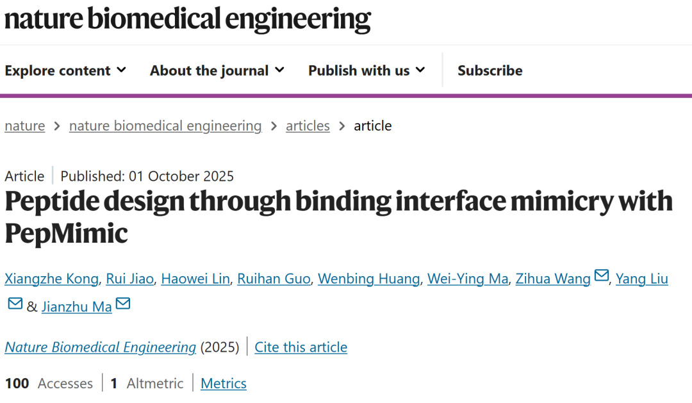
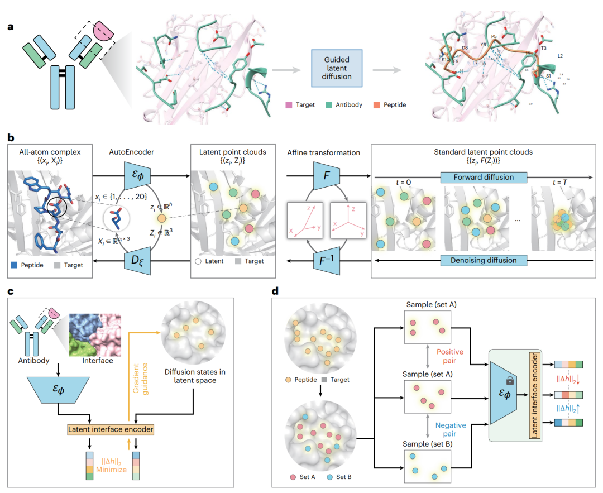
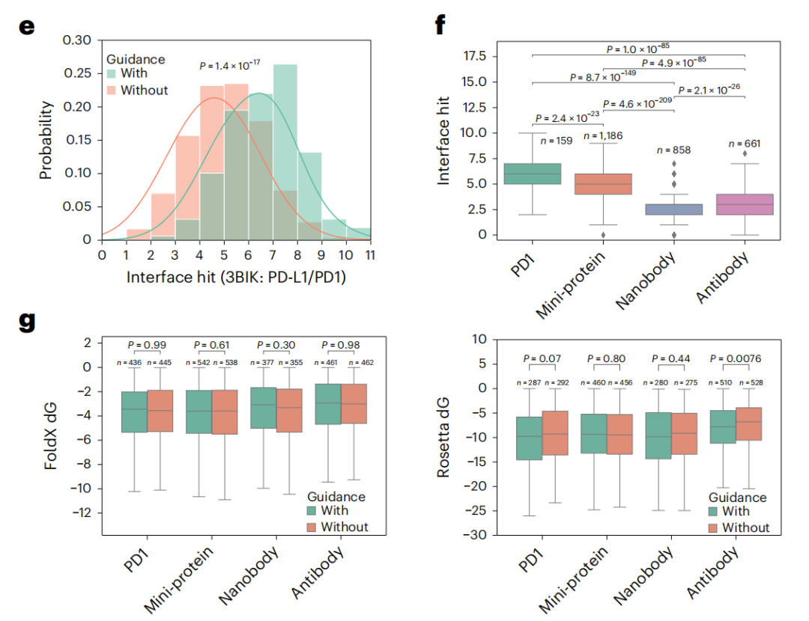
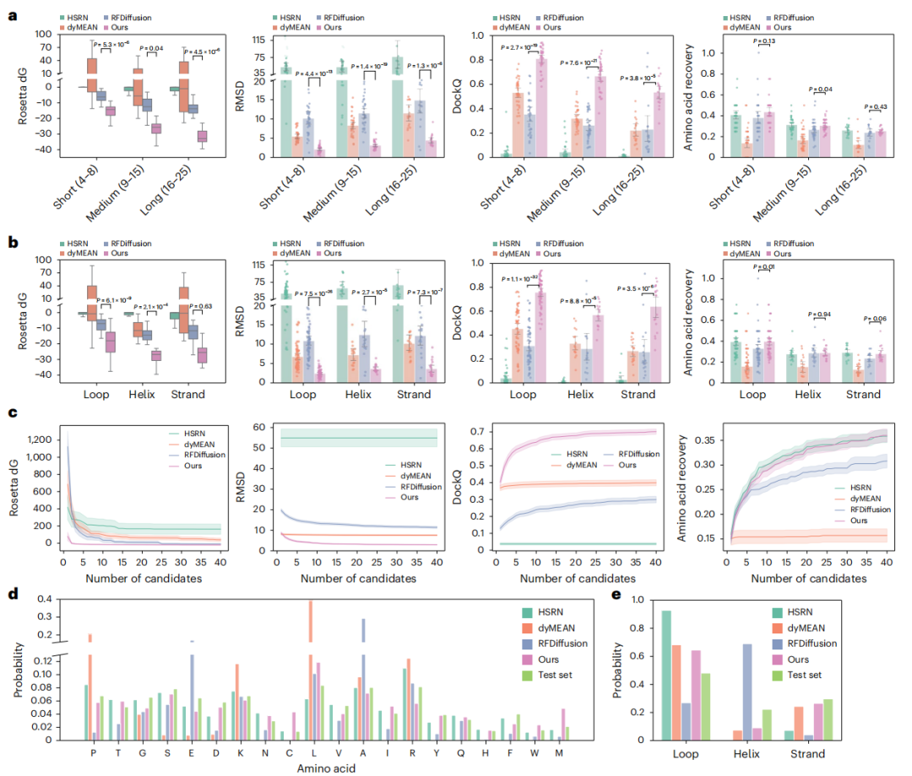
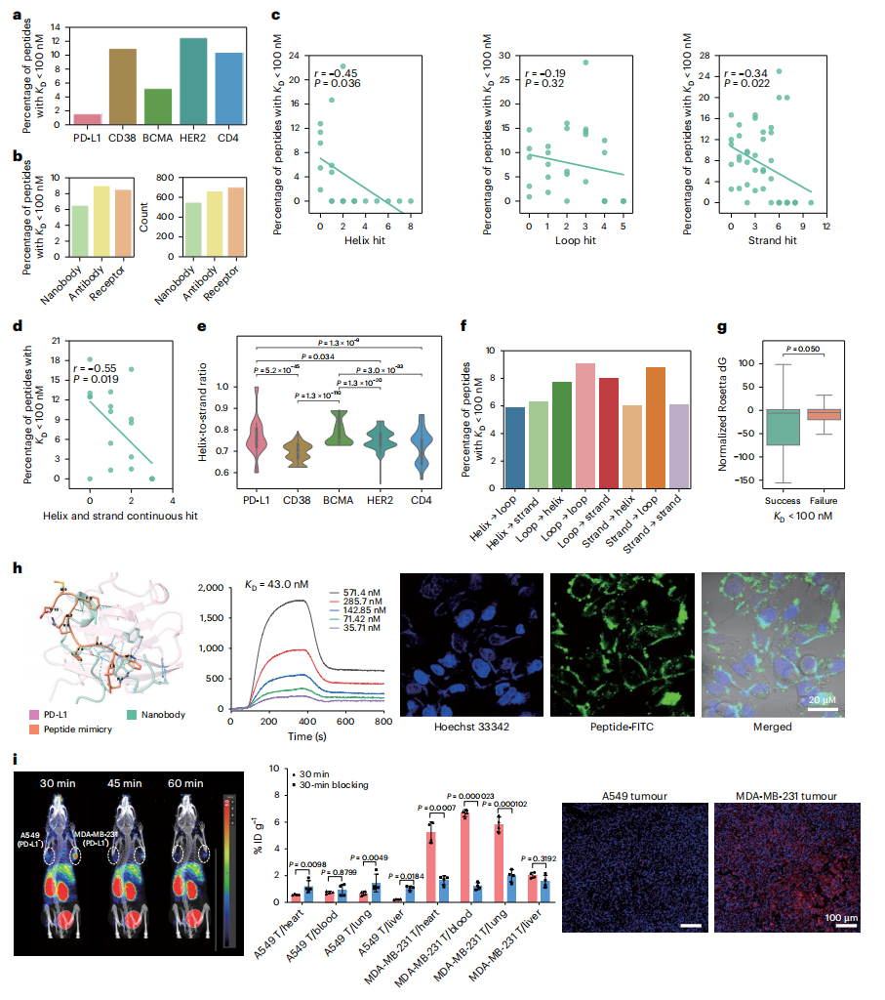
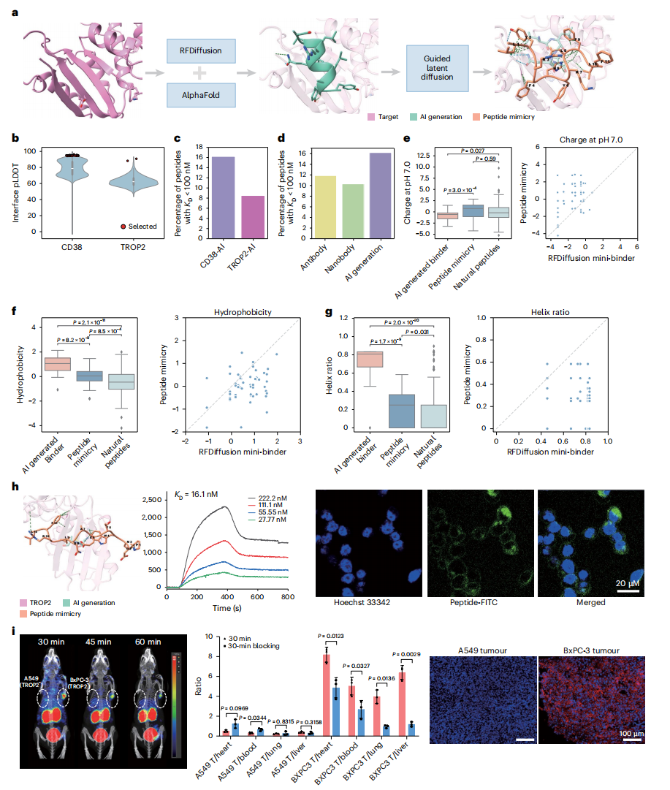

清华大学团队团队于《Nature Biomedical Engineering》上发表题为《Peptide design through binding interface mimicry with PepMimic》的论文，提出“PepMimic”算法。该算法能够基于已知蛋白质（如抗体或受体）的结合界面结构，高效设计出具有高亲和力的短肽结合剂，有望为癌症等重大疾病的靶向治疗与诊断成像开辟全新路径。
肽类药物因其高特异性、低毒性、良好的细胞渗透性以及可口服等优势，已成为新药研发的热点领域。目前全球已有80多种肽类药物获批上市，广泛应用于糖尿病、癌症、骨质疏松等疾病的临床治疗。然而，传统的肽设计方法多依赖人工提取结合片段或依赖高通量筛选，效率有限，尤其难以应对结构复杂的非连续结合界面。
PepMimic算法正是针对这一瓶颈问题提出创新解决方案。它通过AI技术模拟蛋白质结合界面的关键相互作用，自动识别并线性化构建短肽序列，从而实现对复杂结合模式的精准复现。在研究中，团队已成功将PepMimic应用于PD-L1、CD38等多个关键药物靶点，展现出其在新一代生物医药研发中的广阔前景。

1. 全原子自动编码器：原子级结构的可逆编码器
该模块是PepMimic的基础，旨在实现对肽分子全原子几何结构的高保真、可逆编码与重建。
核心功能：将包含序列和三维坐标的肽全原子结构，压缩至一个低维潜在空间，并能无失真地解码还原。
工作原理：
编码：输入肽-靶蛋白复合物的全原子坐标。编码器将每个氨基酸的所有原子（主链与侧链）压缩为一个嵌入向量，最终形成一个包含E(3)-不变特征（如氨基酸类型）和E(3)-等变特征（如空间坐标）的“潜在点云”。
解码与训练：通过重建损失进行训练，确保模型能从潜在点云准确重建出原始的氨基酸类型和原子坐标。
技术优势：与传统依赖扭转角的模型不同，此模块直接建模原子级相互作用（如氢键），能更精确地捕捉对结合至关重要的侧链几何细节，从而有效处理传统方法难以企及的非连续结合界面。
2. 潜在扩散模型：条件化的肽结构生成器
此模块在潜在空间中运行，负责根据靶蛋白结合位点的信息，从头生成具有正确序列与结构的肽潜在点云。
核心功能：以靶蛋白结合位点为条件，通过去噪扩散过程，从随机噪声中生成与之匹配的肽结构。
工作原理：
扩散过程从一份标准高斯噪声开始，通过一个逐步去噪的迭代过程，将其转化为一个结构合理的肽的潜在点云。
该点云随后被送入全原子自动编码器的解码器，最终输出肽的全原子三维结构与其氨基酸序列。
技术优势：这种扩散模型能够同时生成序列与结构，相比自回归或逆折叠方法，在处理复杂界面时更具灵活性和准确性，实现了靶点特异性的肽设计。
3. 潜在界面编码器：实现结合界面的智能模拟
此模块是“模仿”功能的关键，通过梯度引导使新设计的肽能够复现参考结合剂（如抗体）的结合模式。
核心功能：提取并编码参考结合剂的界面特征，在生成过程中引导新肽的潜在表征向其对齐。
工作原理：
界面编码：首先定义参考结合剂与靶蛋白之间的结合界面，并用相同的全原子自动编码器将其映射为潜在点云。随后，一个专用的界面编码器将该点云总结为一个单一的数值向量。
梯度引导：在扩散生成过程中，实时计算生成肽的界面向量与参考界面向量之间的距离，并通过梯度下降最小化该距离，从而逐步优化生成过程，确保最终产物在结合模式上与参考物相似。
技术优势：这种引导机制无需配对数据或重新训练模型，巧妙地解决了条件生成的计算瓶颈，即使对于非连续界面，也能高效地实现结合模式的转移。

整体算法流程与整合
PepMimic的算法框架提供两种生成模式，以适应不同的设计需求与先验信息：
1. 无引导模式 (Unguided Mode)
在此模式下，算法仅运行前两个核心模块，直接基于靶点蛋白的结构特征，从头生成具有高亲和力潜能的特异性肽段。该模式适用于缺乏已知结合模板的靶点。
2. 有引导模式 (Guided Mode)
当存在可参考的蛋白-蛋白相互作用界面（如抗体-抗原复合物）时，算法将整合第三个功能模块。该模块能够将参考界面的关键空间与化学特征转化为约束条件，引导肽段生成过程，从而实现从复杂界面到简化肽段的精准“翻译”与功能模拟。
评估与验证

在in silico评估中，PepMimic在93个测试复合物上展现出全面优于基线的性能。其AUROC达到71%，显著高于RFdiffusion的69%。在关键的结构精度指标上，PepMimic表现尤为突出：氨基酸恢复率高达40%，界面RMSD低于2Å的成功率达到25%，较基线15%的实现显著提升。特别值得关注的是，界面命中指标分析显示，PepMimic在处理需要形成紧凑、多段界面的复杂结合场景时具有独特优势。

实验验证：从体外到体内，数据证实设计优势
为系统评估PepMimic的性能，研究团队针对PD-L1、CD38、BCMA、HER2及CD4等多个靶点，分别生成并合成了384条肽链进行严格测试。
高亲和力肽段高效产出：表面等离子体共振成像（SPRi）分析显示，平均8% 的设计肽其解离常数KD小于100 nM，其中26条更是达到了纳摩尔（10⁻⁹ M）级别的超高亲和力。这一结果显著优于随机文库（0%），证明了设计的精准性。
设计模式影响成功率：分析揭示，模拟抗体/受体界面的策略成功率（14%）高于模拟纳米抗体（8%）；在结构层面，环状界面因更契合肽链的天然柔性，其表现优于螺旋或线性结构。
细胞特异性结合：流式细胞术与共聚焦成像证实，设计肽能特异性结合细胞膜靶标，例如在PD-L1阳性细胞中观察到8.85倍的显著性高摄取。

攻克无模板靶点：对于TROP2和CD38等缺乏已知结合剂的困难靶点，团队创新性地采用“两步法”：先利用RFDiffusion设计微型蛋白（成功率14%，KD ~10⁻⁸ M），再以其为模板生成的肽段，展现出更类天然药物的理化特性（如疏水性更低、螺旋含量更少）。
活体内靶向与成像：在HER2+乳腺癌、BCMA+骨髓瘤及肺癌等多种小鼠模型中，经尾静脉注射的FITC/⁶⁸Ga标记肽，在肿瘤部位表现出高效富集（如PD-L1+肿瘤摄取倍数为8.85，TROP2+肿瘤高达16.18）。PET-CT成像清晰，显示注射24小时后仍有超过50%的肽段滞留于肿瘤区域，并伴随快速的肾脏清除，展现出优异的成像对比度和良好的药代动力学特性。

意义、局限与展望
PepMimic的核心意义在于成功桥接了蛋白与肽的设计领域，为药物开发提供了新范式。它尤其适用于传统“不可药”靶点的开发，能够将大分子抗体与受体的高亲和力界面高效转化为结构精简的肽分子，从而大幅降低早期筛选的成本与周期。讨论中特别强调了其在肿瘤治疗领域的巨大潜力，例如可模拟PD-1/PD-L1阻断等关键免疫通路。
然而，该技术目前也存在一定局限。首先，其性能依赖于高质量的输入三维结构，对AlphaFold等预测模型的准确性有较高要求；其次，训练数据的来源偏向于已知的常见相互作用界面，可能对全新结合模式的泛化能力有限；此外，肽分子在体内面临的稳定性挑战（如易被蛋白酶降解） 仍是实现临床转化必须解决的关键问题。
展望未来，多个富有潜力的方向：将设计框架扩展至环肽等更稳定的化学空间；发展整合多模板参考信息的模拟策略以提升设计质量；以及将此类原理应用于抗体CDR区的优化设计，进一步拓宽其应用边界。